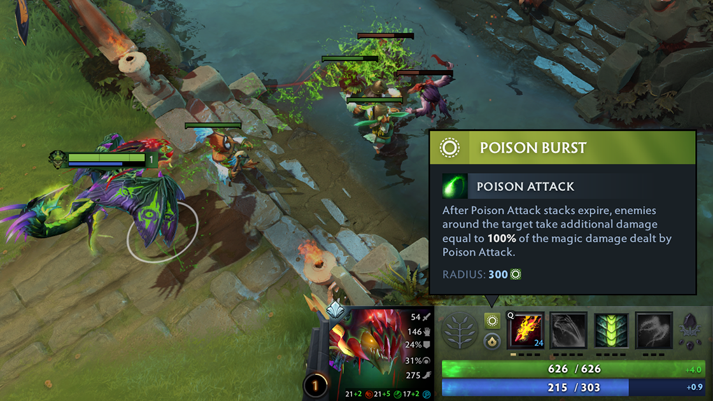
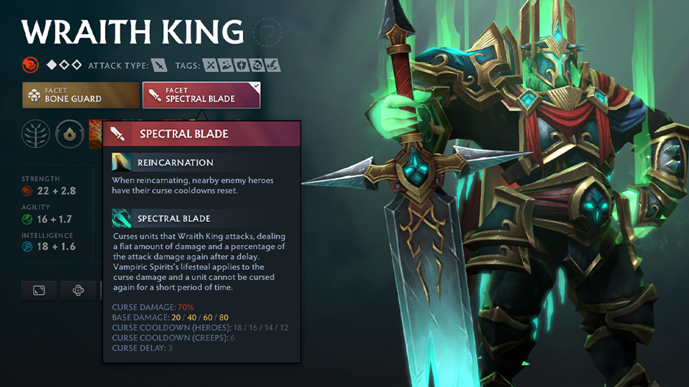
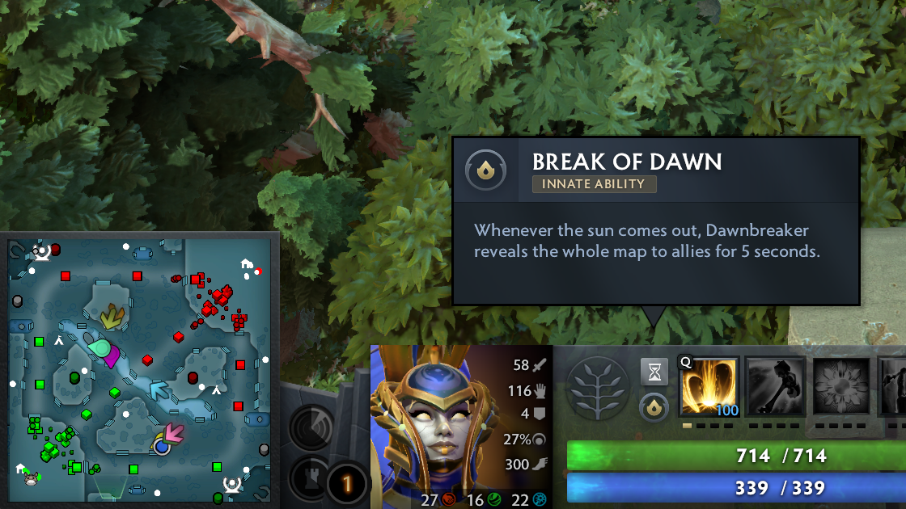
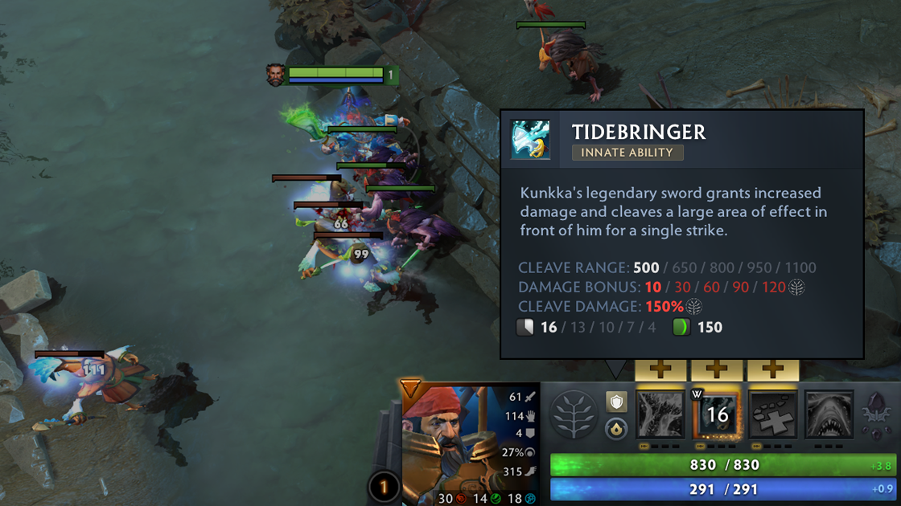

Hero Facets


Facets are a hero customization choice that provide the ability to better align the playstyle of a hero with a specific match or player preference. Facets are specific to heroes: Each hero has at least two Facets, and every player can choose the Facet they prefer during strategy time at the beginning of each match.
All Hero Facets More infoInnate Abilities

Some Innates grant a hero a unique effect. For example, Dawnbreaker reveals the whole map to allies when the sun rises.

Other Innates change a hero ability to have five levels and get a free ability point at level 1. For example, Kunkka's Tidebringer now starts at level 1, and can still be upgraded four more times like normal.
Still not convinced? To be honest, nor are we. That's why we're selling them, not buying them.